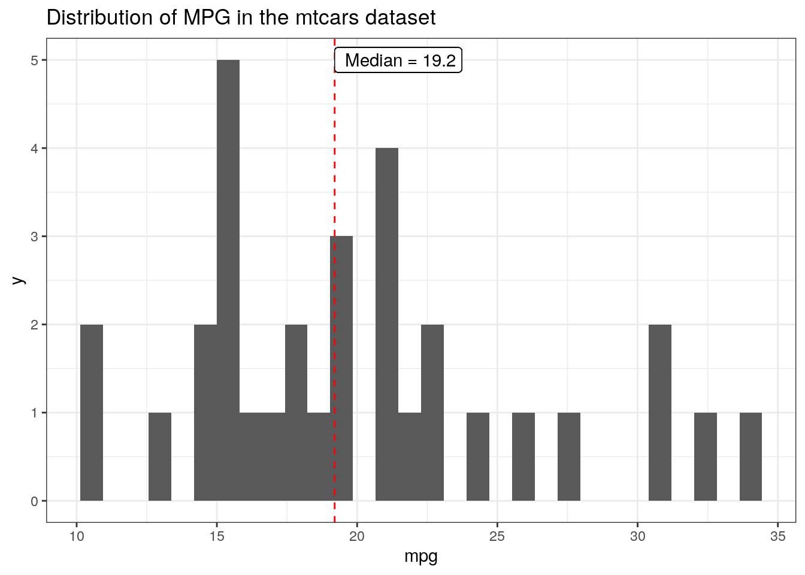

data(mtcars)
ggplot(mtcars, aes(x = mpg))+
geom_histogram() +
geom_vline(aes(xintercept = median(mpg)), color = "red", linetype = 'dashed')+
geom_text(aes(x = median(mpg), y = 5, label = paste(" Median =", median(mpg))), hjust = 0)+
ggtitle("Distribution of MPG in the mtcars dataset")Accidentally Repeating Labels in ggplot2
Why labels plot over each other and how to avoid it
When adding labels or text to ggplot you may have run into a problem where it is either taking much longer than you expect to plot, crashing Rstudio while plotting, or creating blurry or jagged text/labels. This all stems from the same problem, which is that, if the labels are repeated n times in your dataset, they are being plotted n times. As it writes those text over and over again on top of itself, it 1) will take a long time and 2) will create blurry text. Below are several options to fix this problem.
But first, the problem…
Example of the repeating problem
Let’s create an example where this problem could arise. For me, it’s when I want to use a summary statistic within a ggplot call. Say we want to look at the frequency of mpg mtcars dataset, for example, and add a label for the median.
This dataset is not very long, so it will plot quickly, but you can see that the text for the “Median” label is very jagged. This is because it is plotting that for each row in the dataset, 32 times total. geom_text was originally designed for work with a dataframe where you may want to label each point or observation, and so, following the philosophy of tidy data, repeats this for each row of the initial dataframe.
Here are three ways to fix the problem, presented in my order of preference:
- Use
annotateinstead ofgeom_text - Reset the data source before the
geom_textcall - Calculate the summary statistic outside of the
ggplotfunction and call it directly
I came across these solutions in a couple of different places, but most were drawn from this stackoverflow post.
Use the annotate geom
Perhaps the most straight-forward solution is to switch to using a geom that is made for this purpose, annotate. From its reference page, “properties of the geoms are not mapped from variables of a data frame, but are instead passed in as vectors”. This solves the repeating problem due to the label being linked to the data source above.
ggplot(mtcars, aes(x = mpg))+
geom_histogram() +
geom_vline(aes(xintercept = median(mpg)), color = "red", linetype = 'dashed')+
annotate(geom = "text", x = median(mtcars$mpg), y = 5, label = paste(" Median =", median(mtcars$mpg)),
hjust = 0)+
ggtitle("Distribution of MPG in the mtcars dataset")The important thing to note in the code above is that we must specify the dataset in the annotate call (e.g. mtcars$mpg, instead of just mpg), since it doesn’t use non-standard evaluation (NSE) within the aes like other geoms.
Reset the data source
If you’d like to keep using geom_text, you can reset the data source within its call, so that it is no longer linking labels to the multi-rowed data source used in the original ggplot call. This is done by manually setting the data to an empty data.frame in the geom_text call.
ggplot(mtcars, aes(x = mpg))+
geom_histogram() +
geom_vline(aes(xintercept = median(mpg)), color = "red", linetype = 'dashed')+
geom_text(data = data.frame(), aes(x = median(mtcars$mpg), y = 5,
label = paste(" Median =", median(mtcars$mpg))), hjust = 0)+
ggtitle("Distribution of MPG in the mtcars dataset")
As in the first solution, you’ll need to specify that mpg is within the mtcars dataframe within the aes, because the dataframe that the geom_text is using is the blank one.
Calculate the summary statistic outside
Another option is to calculate the median value outside of the ggplot call and then call it directly with geom_text. This is my least favorite because it creates an extra object in your environment, and I am all for a clean environment. Plus the functionality to do this already exists in ggplot, so why not use it?
#create the median value
med.mpg <- median(mtcars$mpg)
ggplot(mtcars, aes(x = mpg))+
geom_histogram() +
geom_vline(aes(xintercept = median(mpg)), color = "red", linetype = 'dashed')+
geom_text(data = data.frame(), aes(x = med.mpg, y = 5,
label = paste(" Median =", med.mpg)), hjust = 0)+
ggtitle("Distribution of MPG in the mtcars dataset")
You could use this method with either geom_text or annotate, but if you are already using annotate you may as well just use the first solution.
What about geom_label?
Although I only talked about this issue with geom_text, there is another geom that is functionally the same, except it adds a box and background, geom_label. Interestingly this doesn’t have the same blurry problem as geom_text:
ggplot(mtcars, aes(x = mpg))+
geom_histogram() +
geom_vline(aes(xintercept = median(mpg)), color = "red", linetype = 'dashed')+
geom_label(aes(x = median(mpg), y = 5, label = paste(" Median =", median(mpg))), hjust = 0)+
ggtitle("Distribution of MPG in the mtcars dataset")
But is this just because it has a white background and so you can’t see the labels that it is plotting over? One way to check this is to benchmark a larger dataset and compare the times, which we can do with the tictoc package. First, the original plot:
library(tictoc)
tic()
ggplot(mtcars, aes(x = mpg))+
geom_histogram() +
geom_vline(aes(xintercept = median(mpg)), color = "red", linetype = 'dashed')+
geom_label(aes(x = median(mpg), y = 5, label = paste(" Median =", median(mpg))), hjust = 0)+
ggtitle("Distribution of MPG in the mtcars dataset")
toc()0.255 sec elapsed#make a larger mtcars dataset using rep
mtcars.3k <- mtcars[(rep(1:nrow(mtcars), each = 100)),]
tic()
ggplot(mtcars.3k, aes(x = mpg))+
geom_histogram() +
geom_vline(aes(xintercept = median(mpg)), color = "red", linetype = 'dashed')+
geom_label(aes(x = median(mpg), y = 500, label = paste(" Median =", median(mpg))), hjust = 0)+
ggtitle("Distribution of MPG in the mtcars dataset")toc()10.458 sec elapsedThe larger dataset takes over 25 times longer to plot. Clearly, the problem remains, even if the resulting plot isn’t blurry. The solutions are the same as for geom_text, with the primary difference being that you must specify the type of annotation as ‘label’ instead of ‘text’, when using annotate.
tic()
ggplot(mtcars.3k, aes(x = mpg))+
geom_histogram() +
geom_vline(aes(xintercept = median(mpg)), color = "red", linetype = 'dashed')+
annotate(geom = "label", x = median(mtcars$mpg), y = 500, label = paste(" Median =", median(mtcars$mpg)),
hjust = 0)+
ggtitle("Distribution of MPG in the mtcars dataset")toc()0.168 sec elapsedAnd we can double-check that this is doing what we want because the plotting is fast again, less than 0.2 sec!
TL;DR
If using geom_text or geom_label is creating blurry labels or taking much longer than expected when used with summary statistics, try switching to using annotate.